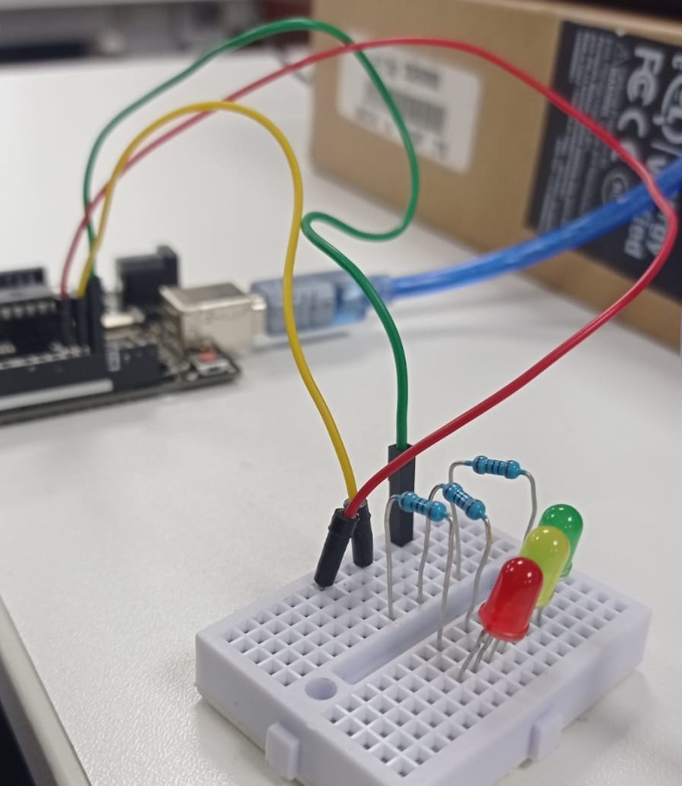

Semana 7
En la primera sessión de clase se desarralló la programación de un semaforo desde cero con Arduino. Se necesito tres focos led (rojo,amarillo,verde),tres resistencias y 3 cables. En primer lugar, se conectó la placa a la laptop, luego en el protoboard se pusieron las resistencias formando un "puente" y las luces en los puertos 11 (led rojo),12 (led amarillo),13 (led verde), seguido de ello, se conectó los cables hacia la placa.Durante la programación se le ordeno al Arduino la duración del encedido y variación de luces, debia cumplir la siguiente condición:
- Luz roja// 10 segundos
- Luz ambar// 2 segundos
- Luz verde // 10 segundos
Luego debe retornar hacia el rojo nuevamente y repetir el patrón, para ello se usa la función loop. Finalmente se nos enseñó como medir el valor de las resistencias con el Multimeter. 
Durante la segunda sessión vimos sobre como funcina un diagrama de flujo el cual es una representación gráfica de un algoritmo y facilita su compresión y su traducción a un lenguaje de programación.Simbología de los elementos del flujo: